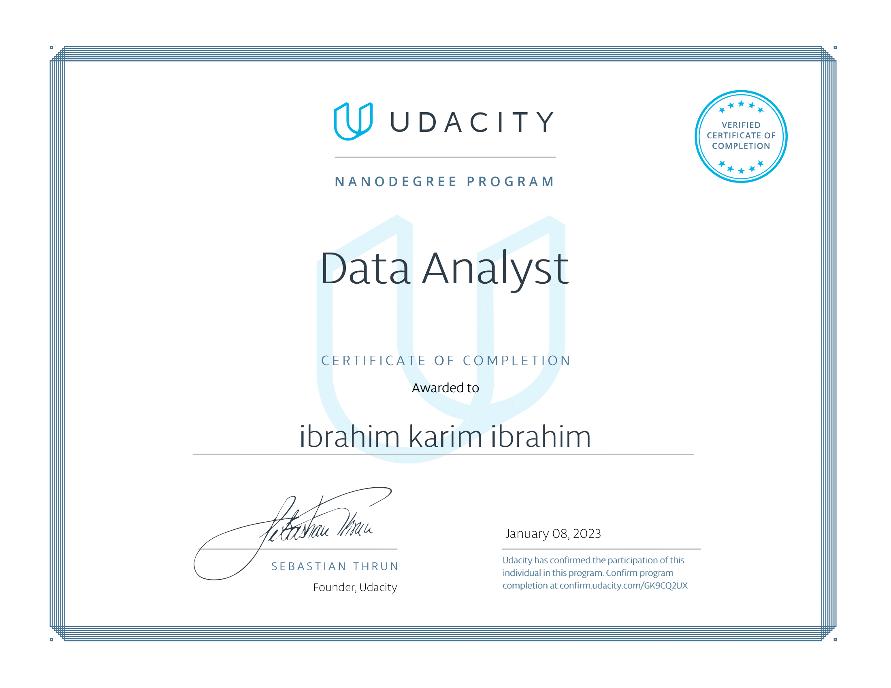

Analyze a dataset and communicate your findings about it. Use the Python libraries NumPy, pandas, and Matplotlib. Go through the whole data analysis process from posing questions about the data to presenting your answers based on the analysis.
Link to the report: TMDB Movies Analysis
Understand and make a decision about A/B test results of a new webpage.
Link to the report: A/B Test Results Analysis
Gather data from a variety of sources and in a variety of formats, assess its quality and tidiness, then clean it. Document your wrangling efforts in a Jupyter Notebook, plus showcase them through analyses and visualizations using Python.
Link to the wrangling report: WeRateDogs Data Wrangling
Link to the wrangling efforts summary: WeRateDogs Wrangling Summary
Link to the analysis report: WeRateDogs Analysis
Use Python visualization libraries to systematically explore a selected dataset, starting from plots of single variables and building up to plots of multiple variables. Produce a short presentation that illustrates interesting properties, trends, and relationships that you discovered in your selected dataset. Convey your findings through transforming your exploratory visualizations from the first part into polished, explanatory visualizations in the presentation.
Link to the exploratory report: Prosper Loans Analysis
Link to the presentation: Prosper Loans Slide Deck
